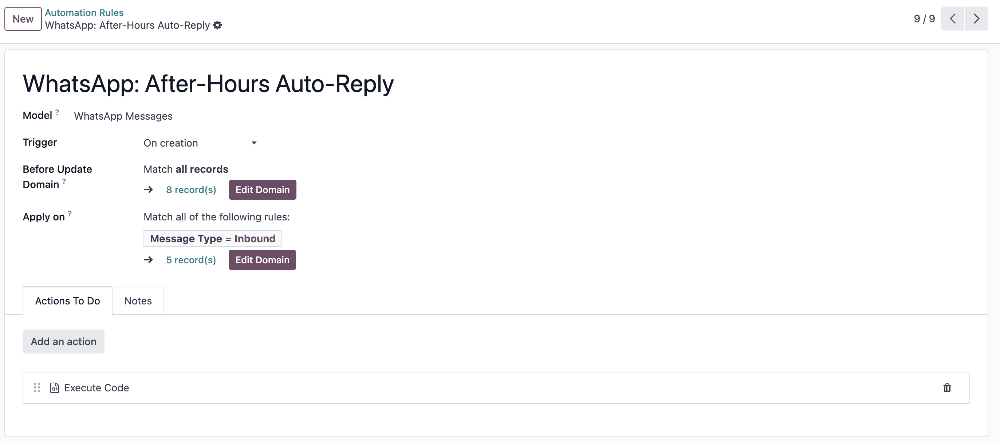
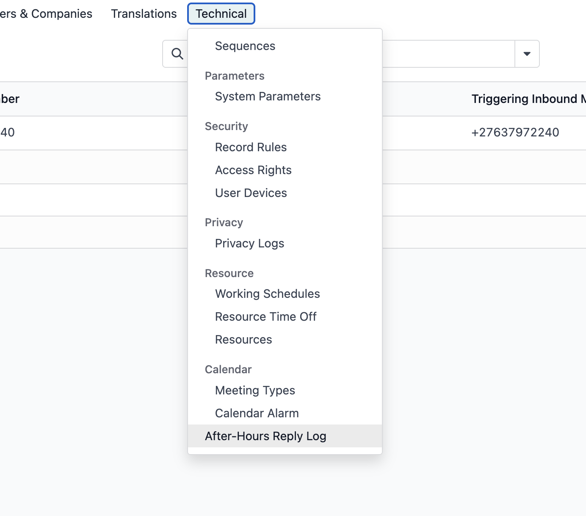
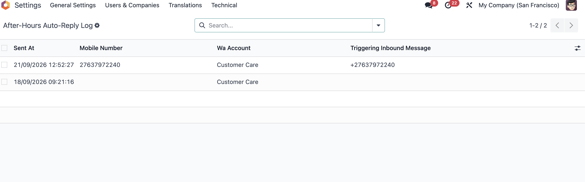

Odoo 18 custom addon — sends a free-text session reply to inbound WhatsApp messages received outside office hours, without touching Odoo's template system.
Odoo's WhatsApp module only sends outbound messages through approved templates, which Meta scores on a rolling 7-day quality rating. A one-way "we're closed" notice tends to get marked as unwanted by recipients, which degrades and can eventually disable the template.
This module sends the after-hours notice as a plain session (free-text) message via the WhatsApp Cloud API instead. Session messages are valid for any reply sent within the 24-hour customer service window opened by the customer's own inbound message, and are not subject to template quality scoring.

screenshot-whatsapp-conversation.png
An Automated Action fires on every new inbound whatsapp.message. It calls a single method, which runs through these checks in order:
If all three pass, it sends the reply by POSTing directly to the WhatsApp Cloud (Graph) API — deliberately not through Odoo's own send method, which only supports templates. The send is logged for de-duplication and audit, and best-effort mirrored into the customer's Discuss channel so agents can see it happened.

screenshot-automated-action.png
The business rules are four constants at the top of models/whatsapp_message.py:
AFTER_HOURS_MESSAGE = "We're currently closed. Thanks for reaching out — we'll call you back tomorrow." BUSINESS_TZ = 'Africa/Johannesburg' BUSINESS_START_HOUR = 8 # 08:00 local BUSINESS_END_HOUR = 17 # 17:00 local, i.e. open [08:00, 17:00) DEDUP_WINDOW_HOURS = 12 # don't re-send within this window
Edit these directly in the file to match a client's actual hours, timezone, message wording, or how long to wait before sending the canned reply to the same number again.
Every reply actually sent is recorded in a small log, viewable under Settings → Technical → After-Hours Reply Log. Since the reply bypasses Odoo's normal send path, nothing else in Odoo records show that it went out — this log is the only record, and it's what the 12-hour de-duplication check reads from.

screenshot-after-hours-log-1.png

screenshot-after-hours-log-2.png
Depends on whatsapp and base_automation. Install the module as usual from Apps.
__manifest__.py and create the Automated Action yourself under Settings → Technical → Automation Rules, calling record.send_after_hours_reply_if_needed() on whatsapp.message, triggered on create, filtered to message_type = inbound.models/whatsapp_message.py and adjust the four constants (see Configuration above) to the client's real hours, timezone, and wording.safe_eval, which blocks the requests and pytz imports this needs. The Automated Action itself only calls the method; all the actual logic lives here, in an ordinary installed Python file that Odoo imports the normal way.